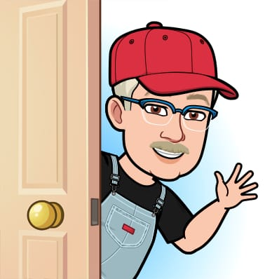

O Zé connection é uma empresa de montagem de hardware's empresariais e com conhecimento em cabeamento de rede e conexão de micros. Nossa empresa foi fundada nos anos 90, trazendo a T.I e informática para a cidade de Indaiatuba, onde nossa empresa expandiu e está crescendo até hoje.

Serviços
Nossos serviços são bem elogiados e requisitados, devido a nossa profissionalidade e conhecimento lógico. Sem falar de nossos preços que atualmente é um dos melhores do mercado, sendo bem acessíveis. Nossas máquinas tendem sempre a atender as necessidades dos clientes sobre qual setor necessário. Nosso cabeamento de rede é um dos melhores em qualidade e velocidade.